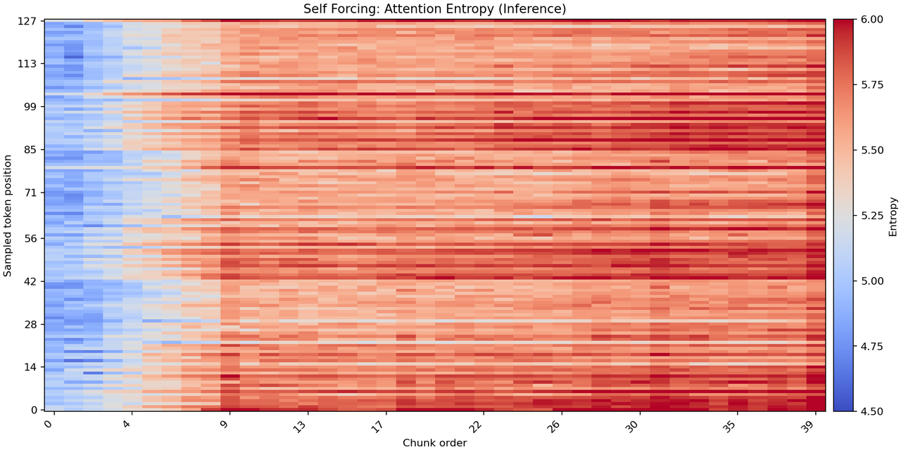
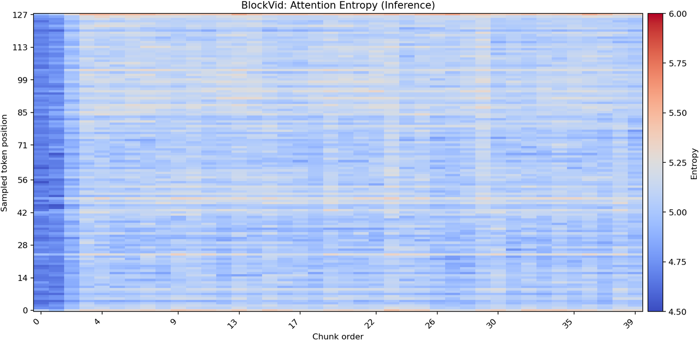
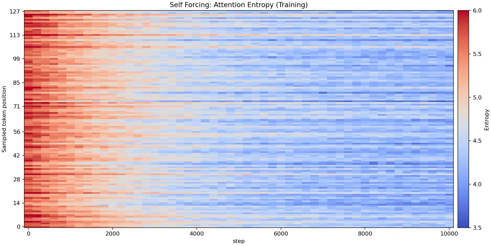
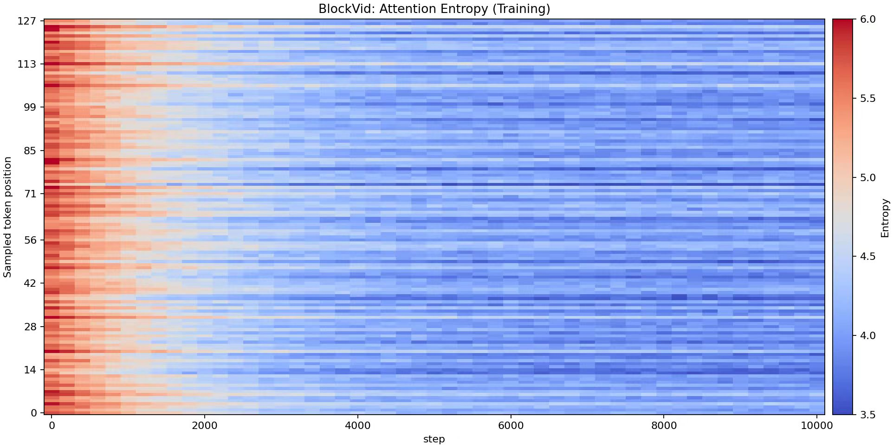

| Method | Subject Consistency ↑ | Background Consistency ↑ | Motion Smoothness ↑ | Dynamic Degree ↑ | Aesthetic Quality ↑ | Image Quality ↑ |
|---|---|---|---|---|---|---|
| Self Forcing++ | 0.9165 | 0.9092 | 0.9803 | 0.5865 | 0.5482 | 0.6453 |
| Rolling Forcing | 0.9409 | 0.9447 | 0.9865 | 0.6600 | 0.6350 | 0.6442 |
| Deep Forcing | 0.9285 | 0.9136 | 0.9819 | 0.7035 | 0.6041 | 0.6455 |
| StreamDiffusionV2 | 0.9036 | 0.9051 | 0.9745 | 0.4552 | 0.5547 | 0.5528 |
| LongLive | 0.9403 | 0.9495 | 0.9845 | 0.7321 | 0.5795 | 0.6483 |
| Infinity-RoPE | 0.9352 | 0.9395 | 0.9710 | 0.5395 | 0.6045 | 0.6475 |
| BlockVid | 0.9410 | 0.9650 | 0.9870 | 0.7720 | 0.5839 | 0.6527 |
| Method | Subject Consistency ↑ | Background Consistency ↑ | Motion Smoothness ↑ | Dynamic Degree ↑ | Aesthetic Quality ↑ | Image Quality ↑ |
|---|---|---|---|---|---|---|
| Self Forcing (HunyuanVideo 1.5 480p) | 0.8136 | 0.8091 | 0.8254 | 0.3365 | 0.4750 | 0.5523 |
| LongLive (HunyuanVideo 1.5 480p) | 0.8442 | 0.8119 | 0.8375 | 0.4890 | 0.4795 | 0.5780 |
| BlockVid (HunyuanVideo 1.5 480p) | 0.8651 | 0.8359 | 0.8562 | 0.5021 | 0.4881 | 0.5805 |
| BlockVid (Wan 2.1 5B 480p) | 0.9410 | 0.9650 | 0.9870 | 0.7720 | 0.5839 | 0.6527 |
| Method | Latency ↓ (s) | Throughput ↑ (FPS) | GPU Memory ↓ (GB) | KV Cache Size ↓ (tokens) |
|---|---|---|---|---|
| Self Forcing | 0.78 | 15.38 | 40 | 49920 |
| LongLive | 0.76 | 20.70 | 45 | 49920 |
| BlockVid (Ours, τ=0.9) | 0.75 | 21.10 | 32 | 28950 |
| Method | Subject | Background | Motion | Aesthetic | Clarity |
|---|---|---|---|---|---|
| MAGI-1 | 41.5 / 42.3 | 44.2 / 43.1 | 40.8 / 41.6 | 46.9 / 45.7 | 43.7 / 44.5 |
| Self Forcing | 48.6 / 47.2 | 52.1 / 50.8 | 47.5 / 46.1 | 49.3 / 50.0 | 45.2 / 46.3 |
| PAVDM | 53.4 / 52.0 | 50.2 / 49.1 | 55.1 / 53.8 | 48.6 / 47.9 | 52.7 / 51.5 |
| FramePack | 56.8 / 55.4 | 54.9 / 53.6 | 52.0 / 50.9 | 57.2 / 56.1 | 49.8 / 48.6 |
| SkyReels-V2-DF-1.3B | 58.1 / 56.9 | 57.5 / 56.2 | 41.9 / 43.0 | 56.4 / 55.1 | 54.2 / 53.0 |
| BlockVid-1.3B (Ours) | 59.2 / 58.0 | 58.7 / 57.4 | 56.5 / 55.2 | 55.8 / 56.3 | 57.1 / 55.9 |
| Method | VDE Subject ↓ | VDE Background ↓ | VDE Motion ↓ | VDE Aesthetic ↓ | VDE Clarity ↓ |
|---|---|---|---|---|---|
| Semantic Sparse KV (τ = 0.97) | 0.0869 | 0.2988 | 0.0153 | 0.9684 | 0.7570 |
| Semantic Sparse KV (τ = 0.98) | 0.0844 | 0.2945 | 0.0119 | 0.9618 | 0.7551 |
| Semantic Sparse KV (τ = 0.99) | 0.0841 | 0.2960 | 0.0114 | 0.9635 | 0.7563 |
| Method (γ) | VDE Subject ↓ | VDE Background ↓ | VDE Motion ↓ | VDE Aesthetic ↓ | VDE Clarity ↓ |
|---|---|---|---|---|---|
| γ = 0.3 | 0.0852 | 0.2971 | 0.0126 | 0.9630 | 0.7568 |
| γ = 0.5 | 0.0844 | 0.2945 | 0.0119 | 0.9618 | 0.7551 |
| γ = 0.7 | 0.0850 | 0.2943 | 0.0123 | 0.9627 | 0.7560 |

A realistic video of a Texas Hold'em poker game in a casino. A late-30s male player with short dark hair and light stubble, wearing a navy blazer, charcoal tee, dark jeans, and a stainless-steel watch, sits at a well-lit poker table holding his cards close. Colorful chips are spread across the felt, the dealer deals steadily, and slot machines glow in the background. Wide shot to medium close-up (00s - 09s).
At the same poker table, the same player throws his cards onto the felt and leans back in his chair, arms opening as the action ends. The dealer continues dealing and the table remains busy with chips and players. Wide shot to medium close-up (10s - 19s).
Moments later, the same player reveals the winning hand on the table and stays leaned back confidently. A nearby patron claps while the dealer moves the game forward. Casino tables and slot machines fill the background. Wide shot to medium close-up (20s - 29s).
After the result, the same player sits forward and stacks his chips neatly, aligning the piles with steady hand movements. The dealer begins the next round as the casino lights flicker softly behind. Wide shot to medium close-up (30s - 39s).
The same player pauses and looks over his organized chips, showing a small, satisfied smile. The table stays active and well lit. Wide shot to medium close-up (40s - 49s).
To finish the sequence, the same player turns and exchanges a celebratory high-five with a nearby patron. Brief cheers rise as the dealer keeps dealing and the casino continues around them. Wide shot to medium close-up (50s - 59s).